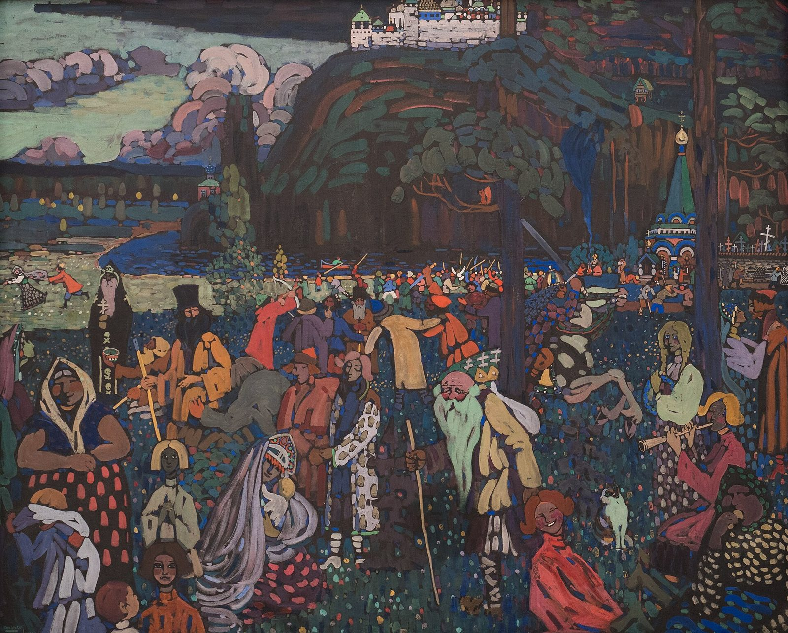

Issue 01 · 11 Nov 2026 · Covers 12 October to 11 November 2026
The record went to Paris, by phone, to Asia
Thirty-four sales above $400,000 in thirty days. Two buyers are on the record. The biggest price came with no pre-arranged support, and the most pre-arranged sales made the least noise.
Sunday email
The week's biggest sales in art, watches and cars, in three minutes. One email, every Sunday. Free.
Sales in this issue
Fine artClaude Monet, Iris (c. 1924-25)Sotheby's Paris · 22 Oct 2026 · Buyer: Anonymous€50M ($56.02M)

Wassily Kandinsky, Das bunte Leben (1907)Christie's London · 14 Oct 2026 · Buyer: Anonymous£31.56M ($41.87M)Fine artPiet Mondrian, Composition III (Komposition No. XIII) (1920)Christie's London · 14 Oct 2026 · Buyer: Anonymous£25.23M ($33.48M)Fine artFrancis Bacon, Figure in Movement (1978)Christie's London · 14 Oct 2026 · Buyer: Anonymous£17.18M ($22.8M)CarsFerrari, F50 (1997)Other Las Vegas · 31 Oct 2026 · Buyer: Anonymous$18.7MCarsFerrari, Daytona SP3 (2025)Other Las Vegas · 31 Oct 2026 · Buyer: Anonymous$18.54MJewelryBulgari, The Bulgari Pink, 24.00-carat fancy intense pink diamond ring (1950s)Christie's Geneva · 10 Nov 2026 · Buyer: AnonymousCHF 12.09M ($14.73M)Fine artClaude Monet, Bord des falaises à PourvilleChristie's Paris · 22 Oct 2026 · Buyer: Anonymous€12.79M ($14.33M)Fine artWillem de Kooning, Untitled (1977)Sotheby's London · 15 Oct 2026 · Buyer: Anonymous£9.8M ($12.98M)Fine artPiet Mondrian, Composition A, with Double Line and Yellow (1935)Christie's London · 14 Oct 2026 · Buyer: Anonymous£9.71M ($12.88M)Fine artJoan Miró, Peinture (Les amants, Adam et Eve) (1925)Christie's London · 14 Oct 2026 · Buyer: Anonymous£8.56M ($11.36M)Fine artClaude Monet, Saule pleureur (L'Arbre de feu) (1918-19)Sotheby's Paris · 22 Oct 2026 · Buyer: Anonymous€9.7M ($10.87M)WatchesF.P. Journe, Chronomètre à Résonance 'Régence', platinumPhillips Geneva · 7 Nov 2026 · Buyer: AnonymousCHF 8.68M ($10.6M)Fine artLiubov Popova, Painterly Architectonic (1918)Christie's London · 14 Oct 2026 · Buyer: Beaumont Nathan£7.64M ($10.14M)Fine artFrantišek Kupka, Espace non-descriptif (1914-22)Sotheby's Paris · 23 Oct 2026 · Buyer: Anonymous€9M ($10.07M)CarsFerrari, 499P Modificata (2024)Christie's Geneva · 8 Nov 2026 · Buyer: AnonymousCHF 8.22M ($10.04M)Fine artAlberto Giacometti, Tête crâne (1934)Sotheby's Paris · 23 Oct 2026 · Buyer: Anonymous€8.7M ($9.74M)Fine artGerhard Richter, Abstraktes Bild (1992)Sotheby's London · 15 Oct 2026 · Buyer: Anonymous£6.7M ($8.88M)Fine artGerhard Richter, Mathis (1983)Phillips London · 15 Oct 2026 · Buyer: Anonymous£5.84M ($7.73M)WatchesPatek Philippe, Ref. 1436 split-seconds chronograph, stainless steel (1945)Phillips Geneva · 7 Nov 2026 · Buyer: AnonymousCHF 6.27M ($7.65M)Fine artLucio Fontana, Concetto spaziale, Mezzogiorno in Piazza S. Marco (1961)Christie's Paris · 22 Oct 2026 · Buyer: Anonymous€6.82M ($7.64M)Fine artHurvin Anderson, Last House (2013)Christie's London · 14 Oct 2026 · Buyer: Anonymous£5.7M ($7.56M)WatchesF.P. Journe, Chronomètre à Résonance 'Tokyo Boutique', titaniumPhillips Geneva · 7 Nov 2026 · Buyer: AnonymousCHF 6.15M ($7.51M)Fine artAmedeo Modigliani, Minoutcha (1916-17)Christie's Paris · 22 Oct 2026 · Buyer: Anonymous€6.21M ($6.95M)Fine artBridget Riley, Streak 2 (1979)Christie's London · 14 Oct 2026 · Buyer: Anonymous£5.21M ($6.92M)Fine artPierre-Auguste Renoir, Jeunes filles au bord de la merChristie's Paris · 22 Oct 2026 · Buyer: Anonymous€5.84M ($6.54M)WatchesF.P. Journe, Vagabondage III, diamond-set platinumPhillips Geneva · 7 Nov 2026 · Buyer: AnonymousCHF 5.06M ($6.18M)WatchesF.P. Journe, Chronomètre à Résonance 'Pre-Production' No. 022/99R, platinumPhillips Geneva · 7 Nov 2026 · Buyer: Shawn MehtaCHF 4.94M ($6.03M)WatchesCartier, Portico Mystery Clock No. 4Phillips Geneva · 7 Nov 2026 · Buyer: AnonymousCHF 4.82M ($5.88M)Fine artMark Rothko, UntitledSotheby's London · 15 Oct 2026 · Buyer: Anonymous£3.8M ($5.03M)Fine artAlfred Sisley, Un VergerChristie's Paris · 22 Oct 2026 · Buyer: Anonymous€3.7M ($4.15M)WatchesF.P. Journe, Vagabondage, pink gold (top lot of a matching trilogy)Christie's Geneva · 9 Nov 2026 · Buyer: AnonymousCHF 2.54M ($3.1M)WatchesPatek Philippe, Ref. 3970 perpetual calendar chronograph, yellow gold, first numbered example (1986)Sotheby's Geneva · 8 Nov 2026 · Buyer: AnonymousCHF 2.05M ($2.5M)DesignEugène Printz, DeskSotheby's Paris · 6 Nov 2026 · Buyer: Anonymous€358k ($400k)About
A free weekly brief on who is buying, what they paid, and what it says about how wealthy families protect and grow capital. Written for readers who know finance and are new to art.